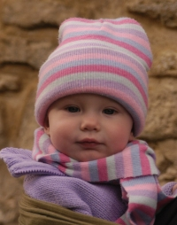

|  |
TABITHA Fall 2005 Tabs can sit up and has just learned to crawl. Dakota amuses her to no end and Edward is over the moon about her newest trick: saying "dadada" (even though it's just baby babble and not in context yet). She's discovering the world through her mouth now and absolutely everything is going in there. Yuck! She can't get enough of "Popcorn Popping on the Apricot Tree" - it's the only thing that keeps her quiet in the car (she's a very naughty traveler). Summer 2005 Tabitha is a very sweet baby. She sleeps well at night and is very smiley and "talkative" by day. Being the first child to be born since the 70's in Edward's famiy (including his extended family) means that she gets plenty of attention! Something she doesn't mind a bit. Want to know more about Tabitha? CLICK HERE for her spotlight. |